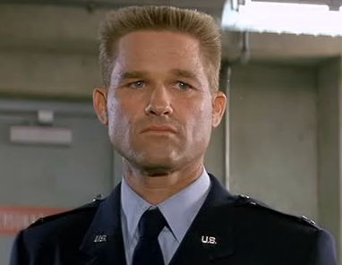
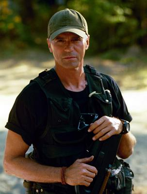
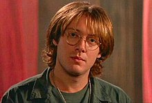
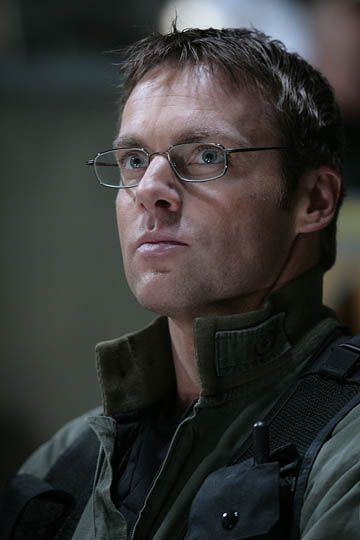
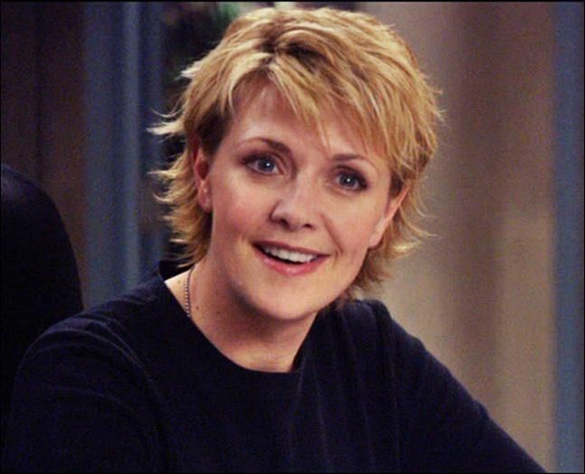
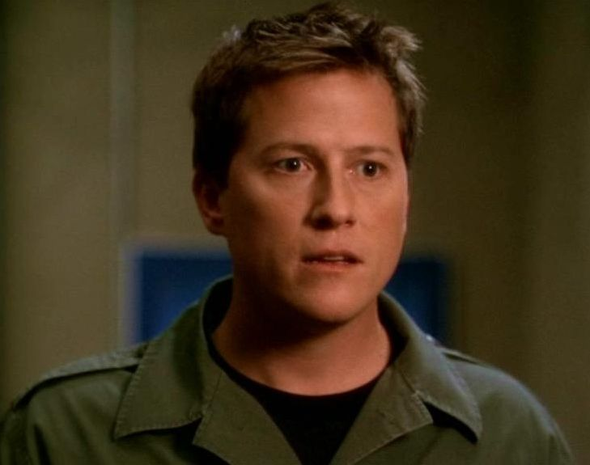
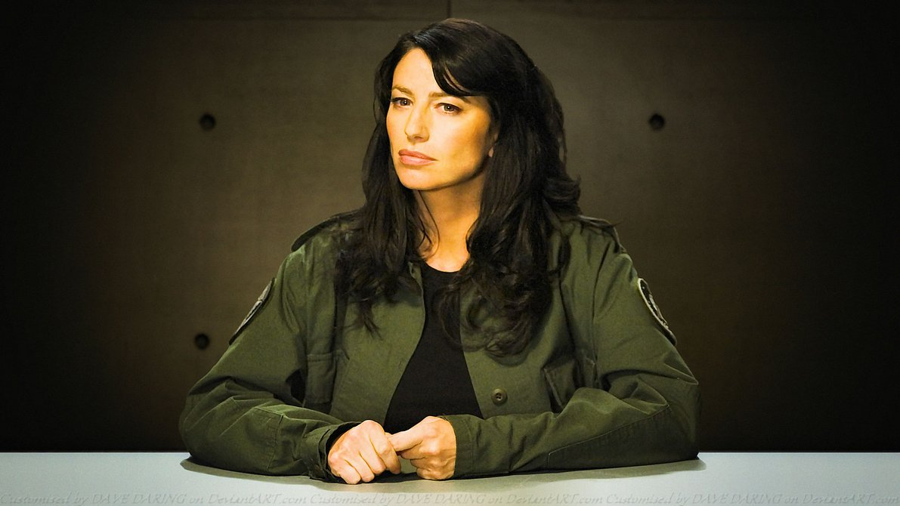
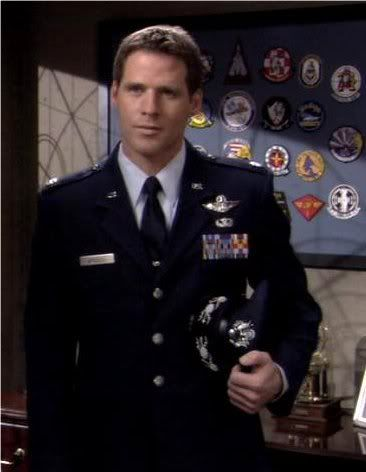

|   | This is Colenel Jack O'neil, he is one badass guy hes always trying to do the right thing and not really caring what others think of him. He led the origional group of men through the wormhole when they connected in 1994 played by Kurt Rusell. He then came back in 1997 played by Richard Dean Anderson to lead SG-1. |
|   | Daniel Jackon is next on the list he is a master when it comes to ancient egypt and loves to make assumptions that the pyramids were once landing pads for aliens. This came true for him in 1994 when he was played by James spader and when he joined Sg-1 in 1997 Played by Michael Shanks. |
|  | Major Carter and in the later shows Colenel Carater is the smartest of the group and and is always questioning Jacks decisions and maybe has a big ole crush on him. But never the less she plays a big part in SG-1 and the other series that folow. |
|
|
Teal'c is a former Jafa warrior from Chulak who asists Sg-1 and becomes a great friend and an important part of the team throughout the series. |
|    | Later on in the series other came to join the team such as Jonas Quinn, Vala Mal Doran and Cam Mitchell. Jonas Quinn Joined the team when his planet developed a naquadah bomb and Daniel Jackson stepped into stop it from exploding, and get sick with radiation and is given the choice to ascend. Vala Maldoran is an ex G'ould system lord turned theif and joins the team when they ask for her help a few times and then becomes a trusted member of the team with a big crush for Daniel. Cam mitchell is intrduced in the final two seasons of Sg-1 as the new leader of SG-1 and Jack O'neil becomes a General. |
The story begins in egypt when Catherine Langford's father finds a mysterious rind in the sands of egypt and then has it transported to the U.S.A. There it site for many years until Catherine Langford discovers the work of Daniel Jackson and invites him to study the mysterious ring. Daniel eventually decodes what the ring really is and so begins their adventure through the ring. It leads them to another planet where they help free other humans who are not as technollically advanced as we are, and are ruled by the G'ould sytem lord Ra. A great battle occurs and Daniel and Jack O'neil defeat Ra head back to Earth.
Three Years pass before anything happens again and the stargate is once again inactive. Until the G'ould system lord Apophis realises that he can take advantage of Ra's death and try and retake eath as it was once ruled by the G'ould. The SG-C is then forced to Put together SG Teams to go through the "stargate" and protect earth From the Threat of the Goul'd and any other possible Threat.
Now The Stargate itslef was designed by an ancient race they call the "Ancients or in the later seasons we learn they were called the Altarans. They are not really seen throughout the series with only a couple of them being seen as they are in an ascended state of being, which pretty much means they are all knowing balls of enery that if they so wish can choose a corporeal state. They developed the gate system over millions of years and have them sent to other galaxies.
For the First seven series SG-1 is lead by Colonel Jack O'neil, who was part of the first team to go through and defeat Ra. He is witty and pretty much does whatever he wants because he is awesome and just likes to get things done. The next team member is Daniel Jackson an egyptologist who again was part of the first team to go through the Stargate, he ended up staying behind and marrying Shae're, who in the main story ends up becoming a Goul'd and then dieing. Daniel Jackson however ends up moving on and being the speciaist in all things Goul's and everything Ancient. Daniel Jackson also becomes an Ascended being at one point, and he is replaced with Jonas Quinn. The Next Important Team Member is Samantha Carter and she is one smart cookie, she is an astro physacist and is an expert when it comes to anything electronic or that is of other world technology. And the Last Major Team member is Teal'c Who is a former Jafa warrior who was the prime of Apophis, who strives for the freedom of his people; and in the last couple seasons that dream comes true for him.
Now in the last Two season they introduce two new characters Cam Mitchell who becomes the new leader of SG-1, mainly because Jack O'neil is promoted to general and has to take more of a back seat. The other main character is Vala Mal Doran who was an alien turned G'ould, turned theif and becomes a well loved team member, She also becomes the mother to one of their greatest enemies in the last season.
StarGate SG-1 is one of the best Sci-fi shows to every appear on T.V. and i wish i could keep going on but I must finish this website so please stay tuned for more updates.